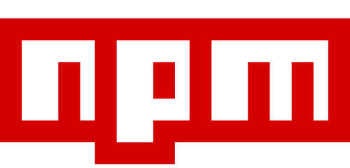

Lager - v5.2.0

WebApp v4
Course repo for studies in webApp version 4 at BTH. We are going to create a React Native mobile application using Expo and other related stuff. The course will create a warehouse application where basic things like API requests, forms, login, error handeling, etc. is learned. Once the pratice parts are done a examination project takes place and we get to follow a made up project by the teachers or a self made project. There are certain criterias to fill for the project but relativly free hands are given if so wished.
Project Prerequisites
All applications have some sort of dependencies, this project requires the following set of dependencies to be installed and working on your machine before you can run the application.
- Installed
node.jsversion20.19.0 - Package management tool
yarn, you can use other tools likenpmorbunbutyarnis recommended since I used it to build this project. - Expo Go app installed on your mobile device.
- Expo Application Service
eas-clitool, replacesexpo-clifor SDK v45+
Guidance on installing the prerequisites
Node Version Manager and Node.js
Install and use Node Version Manager and Node.JS
Node Version Manager (NVM) is a great tool under MIT licence
for easy install and management of Node.js versions. Due to the fact that the version of Node.
js you may need for a project is not the latest or nor the same as another project, you may want
to use NVM to install and manage versions of Node.js to overcome some cumbersome manual steps
you would need to do without it.
Prerequisites
- You need a terminal (CLI)
Step 1: Install NVM
There are different ways to install NVM. It can be installed in a containerized environment or directly on your local machine. Choose your preferred method from the official NVM repository and install it accordingly.
Step 2: Install & Verify a LTS version of Node.js
Once NVM is installed you can install one or more versions of Node.js. Read the usage section
in the official NVM repository
to learn how to install a specific version of Node.js.
In short these are the steps to install a new version of node.js:
First check for the LTS versions available to install from remote. We want a long term support
(LTS) version because it is more stable and has a longer support period then other versions of
Node.js.
nvm ls-remote --lts
If you need to know the latest version of each LTS release, you can check the latest LTS release
list in at the bottom of the output of the nvm list command. When you have one of the latest LTS
releases installed, you can see the version number it in the list. For each of the latest LTS
releases that have not been installed yet, they will be marked (-> N/A) for not available.
Now when you know which version you want to install you can run the following command to install it.
nvm install <node.js version>
After you have installed a version of Node.js that you like to use you can activate it by running
the nvm use command in your terminal.
Check to see that the version you selected and installed is indeed installed on you system. The version you just installed should be listed among the version numbers in the list at the top before all the aliases and LTS releases.
nvm list
Step 3: Activate the installed Node.js version
Now you can activate the version you want to use by running the nvm use command.
nvm use <node.js version>
To check that the version is activated you can use the nvm current command
nvm current
If you want to set the version you just activated as the default version to use, you can run the following command.
nvm alias default <node.js version>
In case you work on sevral projects using different versions of Node.js, you can create a alias for each version you use. This way you can easily switch between the versions you use for different projects.
Another way to manage the versions you use is to create a .nvmrc file
in the root of your project. This file should contain the version number of the Node.js version
you want to use for that project. When you navigate to the project folder in your terminal, NVM
will automatically activate the version of Node.js you specified in the .nvmrc file. There is
a caveat to this approach, your terminal needs to be POSTIX compliant.
To create a .nvmrc file you simply add the --save flag to the nvm use command when
activating the version of Node.js you want to use for the project.
nvm use <node.js version> --save
Tip: Install latest version of NPM using NVM
If you want to install the latest version of NPM you can run the following command.
nvm install-latest-npm
Node version manager is capable of many nice features when it comes to Node.js and its
surrounding ecosystem. As an example it is also able to upgrade the version of NPM you have
installed globally. Be sure to checkout the help command for more information on how to use the
nvm command or simply RTFM.
nvm help
DONE!
You have now installed Node Version Manager and Node.js on your machine.
Package Manager
Package Managers
To install the required packages for the application we will need a package manager. There are
several package managers available for JavaScript, but the most popular are npm and yarn. In
this tutorial, we will use yarn. Make sure you have LTS version 20.19.0 of Node.js
installed on your machine before you proceed as the project requires it.
First node packaget manager aka npm comes with Node.js and thats totally fine to use, there
is no need to move forward with installing yarn if you are comfortable with npm and like to
skip this part. However, if thats your intention then you must locate and remove the yarn.lock
file from the project root directory to later be replaced with package-lock.json file upon
running the npm install command.
Node Package Manager (NPM)

Place yourself at the project root directory and run the following command to install all
dependencies using npm instead of yarn:
rm -rf yarn.lock && npm install
or install all dependencies including the development specific ones with:
rm -rf yarn.lock && npm install --save-dev
Yarn
If you prefer to use yarn and do not have it installed, there are two ways to install it.
Alternative one would be that you use npm to install yarn globally. This will place yarn in
you global node_modules directory and you can use it from anywhere in your system. Remember
there are caveats to this approach but most likely you might never run into them. This is a good
approach and the easiest of ways to install yarn.
With this command you will install yarn globally using npm:
npm install --global yarn
Then install the application dependencies using yarn:
yarn install
or install all dependencies including the development specific ones with:
yarn install --dev
The yarn run command is.
yarn run <package.json script here>
Make sure to read through the help command for a full list of commands and options available.
yarn --help
Bun
The bun package manager is a simple package manager for JavaScript that is written in zig.
This is last years new kid on the block as of the time of writing this tutorial. It is a very
fast package manager and is very easy to use. It is also considered a full drop-in replacement for
both node.js and npm (or yarn) as it leverage a different runtime environment. It uses the
JavaScriptCore runtime witch is different from the famous Google V8 runtime used by node. js. This package manager is great but it is slightly different then the standard once we all
love/hate. Personal preference, this is my new favourite package manager for all things JS/TS so
try it if it makes you curious. ;)
To install bun you can use the following command:
curl -fsSL https://bun.sh/install | bash
-Note: bun have sevral other capabilities that are not covered in this tutorial. As an
example bun includes a API much like the express.js and other features as well.
Check it out at the official bun website.
Now you need to add a small configuration to the file eas.json. This is for EAS build
processes to know what version of bun you have installed and to use it. Detailed description
here. First we must know the
version of bun you have installed. In case you do not know from the installation you can do
this by running the following command:
bun --version
Now add the version of bun you have installed to the eas.json file:
{
"build": {
"development": {
"bun": "<the version of bun you have installed like ex. '1.0.0' or '1.0.1'>"
}
}
}
Due to a few differences in the way bun works compared to npm and yarn you might have to
checkout the bun documentation on the topic of [trusted dependencies](https://docs.expo.
dev/guides/using-bun/#trusted-dependencies) to make sure you can build you application without
any issues. This may or may not be an issue due to what packages the application is using.
Install the application dependencies using bun:
bun install
or install all dependencies including the development specific ones with:
bun install --dev
As with all other package managers you have the basic run command.
bun run <package.json script here>
Make sure to read through the help command for a full list of commands and options available.
bun --help
✅ Done:
By now you should have installed the required packages for the application using one of the package managers mentioned above or another that you may prefer even better then these options.
Expo Go app on you mobile device
Install Expo Go on your device
Here you can follow a step by step guide on how to install Expo Go on your device. Expo Go is a mobile app that allows you to run and test your Expo applications on your own device. This is a great way to test your application on a real device and see how it behaves in a real world scenario.
Prerequisites on installing Expo Go
To install Expo Go on your device you need the following:
- A Android and/or iOS device (not too old) to install the app on
- A network or mobile connection to the internet
- App Store or Google Play account for downloading the app
Step 1 - Go to the Expo install page and download Expo Go
Lucky for us, Expo Go have a beautiful and easy site to install the app from. Just go to the Expo install page and follow the instructions, you make a few choices depending on what device you have and you get a QR code to scan with your phone. Viola! You have the app installed and ready in no time.
Following the instructions on the page you will be redirected to eather App Store or Google Play to download the app.
Step 2 - Connect to a network
When you have the app installed you can open different apps within it by scanning a QR codes from each represented application repo. This is done by opening the Expo Go app and scanning the QR code from the terminal or browser. It is important to know that if you run the app as a server your device must be connected to the same network as the server for the app to connect to the same development application. Make sure your device is connected to the same network as your development server, if you intend to run it this way.
Step 3 - Create an Expo account
Preferably you also you want to create your own account on Expo, this is necessary to be able to work on the application in the future. You can create an account by going to the Expo sign up page and follow the instructions.
DONE!
You have now installed Expo Go on your mobile device!
Expo Application Service
Expo Application Service
The Expo Application Service (EAS) is a service that allows you to run your Expo application as a
local dev server, manage deployment/prooduction builds, app store and google play store
publications etc. EAS is a tool to use when developing a your Expo application to manage the
things and you need it installed to use the Expo Go app in development mode.
Installation
To install the Expo Application Service, you need to have a JavaScript package manager like
npm or yarn installed on your machine. You can install the Expo Application Service by running
the following command:
npm install -g eas-cli
When you have installed the Expo Application Service, you can verify the installation by running the following command:
which eas && eas --version
Now you need to login to the Expo Application Service. If you do not have a Expo account, you can create one by visiting the Expo website. Once you have an account, you can login to the Expo Application Service by running the following command:
eas login
You will be presented with a prompt to enter your Expo username/email, password and a 2FA-token if you have configured one.
✅ Done:
Now you should have installed the required Expo Application Service, EAS.
Check out the application
There are different ways to access this application. You can either open the application directly with the Expo Go app or you can spin up a local development server and open the application in the Expo Go app or in a simulation on your machine. Below you will find instructions on how to do both.
Alt. 1 - Open directly with Expo Go
Open project with Expo Go app
Since Expo was used to develop this application we can easily open the project with the Expo Go app. Open the application link
and scan the QR code from your mobile device and you will be linked to open the project in the
Expo Go app.
Hope you enjoy the application!
Alt. 2 - Spin up a local dev server and open in Expo Go and/or simulation
This is an alternative way to open the application in the Expo Go app. This way you can run the
Step 1 - Clone the GitHub repository
1.1 Place yourself in the directory where you want to clone the repo
Navigate to the directory where you want to clone the repository in your local CLI.
1.2 Clone the repository
git clone https://github.com/DanneDevOoops/webApp_v4.git
1.3 Navigate to the project root folder
cd webApp_v4
Step 2 - Install project dependencies
Now that you have cloned the repository you need to install the project dependencies. You can do
this step using any node.js package manager, like npm, yarn or bun. We will focus on using
yarn since it was used to develop this project. If you for any reason prefer to use npm or
bun you can easily replace yarn with the package manager of your choice in the following
commands but first you should remove the yarn.lock file since the lock file is specific to
yarn.
Now install the project dependencies by running the following command from the project root folder.
yarn install
If you intend to do any work on the project or run some of the scripts in the package.json file
you should also install the development dependencies. You can do this by running the following
yarn command.
yarn install --dev
Step 3 - Start the application server
Now that you have installed the project dependencies you can start the application server. You can do this by running one of the following commands depending on the type of device you intend to run the application. Make sure you are placed in the project root folder first.
3.1 - Connect both devices to the same network
When we run the Expo Go app in connection to a local dev server we need to make sure that the device running the server and the device running the Expo Go app are connected to the same network. This is necessary for the devices to be able to communicate with each other.
3.2.1 - Start the application server
First you start the application server locally by running the following command from the project root folder. When the server is running you will be presented by a QR code and some options in your CLI. From here you can access the application from on you device by scanning the QR code and the project link will be presented to open it inside your Expo Go app.
yarn start
3.2.2 - Start the application server and simulate for Android devices
Either you directly run the general start command below or you run the generat yarn start command
and then choose the option to run the application on an Android device. When the application
server is running the choice for Android simulation is a or shift + a if you like to select
what device to simulate on. The choice for iOS simulation is i or shift + i to select what
iOS device.
If you rather start the application server and simulate an Android or iOS device directly
you can run the direct executing commands below.
You will be able to start any of the device simulations installed on your machine.
yarn android
3.2.2 - Start the application server for iOS device
yarn ios
3.2.3 - Start the application server for web
yarn web
Hope you enjoy the application!
Wanna work further on this project?
To move forward on this project there are some things you might want to know about regarding the standard, tooling and what have been done at a prior stage to make it what it currently is.
Make sure to check out the projects development documentation for references and description on the code base.
Project standards, tooling and workflows / actions
Node.js version disclaimer
For this project we are using Node.js version 20.19.0. Its been defined in the tsconfig.json
file as target: ES2020 and this is important to keep in mind when you are working on the
project. In case of stepping out of this version you may experience some issues with the
packages configured to work for you in the process of development. As and example TypeDoc
compatability will not react outside of the ES2020 version of Node.js and there might as
well be sevral others currently unknown to me. That beeing said, it might still be possible to
spin up a development server for temporarily viewing the application on a different version of Node. js.
Linting, formatting and type checking the code base
If you intend to do any keep working on this project there are a few things you should know for
the best possible experience moving forward. The project have a few scripts in the package. json so this would be you absolut starting point to pick things up.
You should keep a good pace of linting the code base moving forward and for this purpous eslint
and prettier have been configured to keep things cleaner, semantically a little bit more correct
and somewhat more cohesive in terms of readable chunk of code. To know more on the linting and
other checks you should have a look at the configuration in the file eslint.config.mjs at
project root level. Its been setup fairly standard but could potentially be tighten up a bit
depending on your preferences for such things.
To execute the linting and formatting checks you can run the following command from the project root folder.
yarn lint
As TypeScript was chosen as the language for this project you should also keep a good pace of type checking the code base. We also run a this check to make sure the code is able to compile from TypeScript to JavaScript, which is where it will be at runtime and after the development/production build process completes. This check can be executed by running the following command from the project root folder.
yarn ts:check
Testing the code base
Besides the standard of linting, formatting and type-/compile checking your codebase you should
also keep writing tests for your code. This is a good practice to keep the codebase stable and
to make sure that the code you write is working as intended. This will help in moving forward from
development into a production environment with more confidence.
The project have been configured with Jest as the testing library. Jest is a great testing
library that is easy to use and have a lot of features that can help you write good tests for your
code. If you are familiar with other JS testing libraries like Mocha or Jasmine you will feel
right at home with Jest as the anatomy of the tests are quite similar.
To execute the test runner jest, a script have been a configured in the package.json
file. Execute it with the following command from the project root folder.
Check the test coverage here.
yarn test
Development documentation
To keep the project documentation up to date and to make sure that the code is well documented
you should keep writing docstrings for each part of the code base as you go along. This will help
you and others to understand the code better and to keep track of what each part of the code
does as it grows in size and complexity. To suit this purpose we have configured TypeDoc to
generate documentation from the codebase docstrings. The documentation is automatically generated
from the docstrings in when pushing to the main branch of the repository. You will find the
generated documentation in the docs folder under html.
CI/CD pipelines wiht GitHub Actions
As you know, nobody likes to do the same thing over and over again. This is where CI/CD
pipelines make a great entry. To avoid generating the development documentation manually, update
linting-, formatting-, type checking- and testing badges manually and to keep the project
updated enough for anyone else to pick it up and continue we use Github Actions workflows.
When you push to the main branch of the repository the CI/CD pipeline will be triggered and
run the following checks on the codebase:
- Linting and formatting checks
- Type checking and compiling checks
- Testing checks
- Documentation generation
Checking React Native and Expo SDKs
It is still posible to have issues with the codebase even if the linting and type checking
passes correctly to 100% and at time that can be a daunting thing to figure out. There is
another command configured in the package.json file that potentially can help you a bit. This
command is the rn:doctor that will run checks on the SDKs and other dependencies related to
React Native and Expo. You can run this command from the project root folder. This may or may
not be mor of a deployment check but it can be a good thing to run it from time to time to make sure
that the project is in a good state.
yarn rn:doctor
As you go forward...
As you go forward with the project you should keep in mind that the project is a living thing and that it will grow and change over time. To keep the project in a good state you should keep writing tests, keep the codebase clean and well documented and keep the project up to date with the latest versions of the dependencies. Remember Expo SDKs and React Native versions move fast as new mobile devices are released all the time, OS versions are updated on both iOS and Android. What is todays truth might not be truth tomorrow but Ive made a effort set a basic standard here that allows for this project to be updated and maintained in a good way.
Good luck!
@author
DanneDevOoops